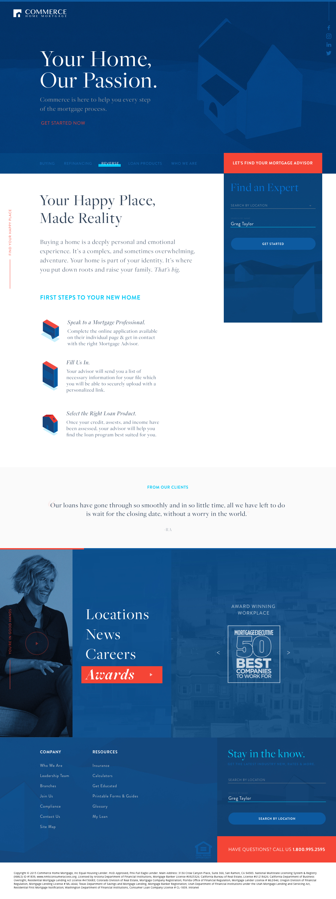

Overview
Buying a home is a complex and emotional experience that can be difficult to tackle.
Headquartered in San Ramon, California and originally founded in 1994 by Simonich Corporation and Bank of Walnut Creek, Commerce Home Mortgage aspires to simplify the application process for potential clients, streamlining recruitment, and providing those employees with the right tools needed to thrive.